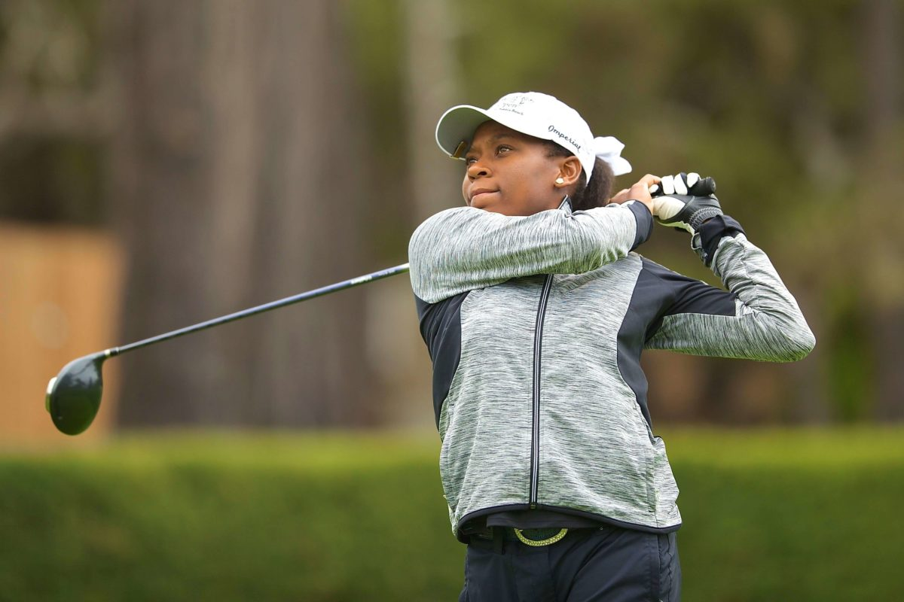

Angelica's Portfolio
This is Angelica's portfolio.
My name is Angelica. I attend WashU. I love the outdoors especially hiking and biking. My favorite sport is golf. I began playing golf at the age of 4.
My dad taught me how to play golf. It is a beautiful sport and I believe every child should get an opportunity to play it. My favorite golf course is Bandon Dunes. It is one of the world's most difficult courses. The weather was so nice when I last played there.
Past Projects
- Tic Tac Toe Board
- Mastermind Game
- WebApp
Visit myLinkedIn!
Visit my Github!
 "Being able to record memories is one major reason why I love photography. Photography has expanded my view of the world and helped to me to see the underlying oneness in everyone. I love photography because it makes me feel one with nature or one with the people who are subjects of my photography."
One of my hidden talents is teaching. I tutor high school students on standardized tests. My students see drastic improvements in their test scores because of the strategies I teach them. They also complement my teaching because it is sometimes the best instructions they have ever received.
Click here to get my favorite color: